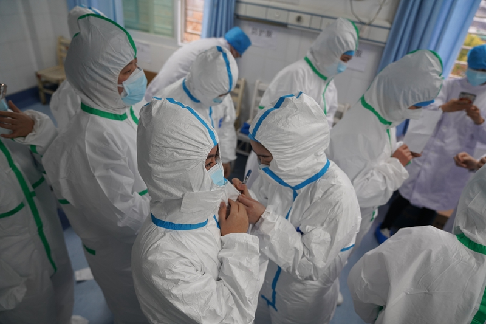
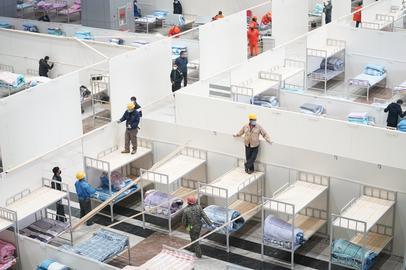

不缺顶尖医院、有SARS前车之鉴，为何武汉仍然每一步都走晚了？
原文链接 备份链接 武汉各大医院发热门诊的紧张态势已有一周，七家定点医院启动才两天已被压到极限。 武汉不缺顶级医院，不缺顶级专家，不缺顶级医疗能力，缺的是公共卫生防控能力、行政效率和疫情处理流程。 在患者和大医疗机构之间，未见到基层 …
“很多人去世。”袁鸣说，“但他们和我们都尽了最大的努力。”
2月15日上午，刚刚经历了一夜冬日雷雨和大风的武汉大雪纷飞，袁鸣早早进入病房查房。依次穿上蓝色隔离服、白色防护服，戴上手术帽、面屏和护目镜，套上手套和脚套——这是进入隔离病区的标准防护，每位医护人员穿戴的时间需要大约半个小时，最后在防护服外给彼此写上名字。
在疫情最为严重时，这样一整套防护装备极为珍贵，很多医院只能保证最一线的医生和护士，而且每天只有一套。医护人员穿着这种密不透风的防护装备，需要连续工作七八个小时。
袁鸣走进一间间病房，依次询问患者身体状况、记录数据。突然，有护士进来喊：“袁医生，19床病人呕吐了，呼吸困难，快过去看一下吧。”
19床的病人有40多岁，三天前确诊收入病区。正在进行鼻导管吸氧的病人表情十分痛苦，似乎想说什么话。突然，她的心电监护仪发出报警声，血氧饱和度很快从90多跌到80多，呼吸频率和心率加快。
“怎么回事？”袁鸣问道。“刚刚病人接了一个电话，就这样了。”护士回答。
袁鸣赶紧叫护士推来高流量吸氧仪。这是在武汉一线非常紧缺的设备，通过鼻塞导管直接将一定氧浓度的空氧混合高流量气体输送给患者，这种气体具有高流量、精确氧浓度以及加温湿化的特点，患者吸氧时会比较舒适。此次疫情中，高流量吸氧仪在治疗重症患者中发挥了重要作用。
经过一段时间的高流量吸氧后，病人似乎平静了一些，但数值显示，她的呼吸状况并未改善，血氧饱和度仍在下跌，呼吸频率升到每分钟40多次，嘴唇开始发紫。
“换无创呼吸机，快！”袁鸣急促地说。无创呼吸机很快被推了进来，护士拔下鼻导管，给患者换上面罩。但病人的反应让大家吃了一惊，她突然烦躁地在床上扭来扭去，试图拉下面罩，呼吸机也发出尖锐的报警声。
“没气了！没气了！我要气！快！救救我！”病人发出无力的低喊，奋力抬起身体。护士在一旁赶紧说：“阿姨，有气的，机器有气的，你要根据呼吸机的节奏呼吸，没事的。”但病人的人机抵抗越来越严重，血氧饱和度更是跌至70。
“要推安定吗？”护士征求袁鸣的意见。她仔细检查了数据：“呼吸机氧压不够，供氧不足，不能硬上，换回高流量吸氧。”
护士拆下面罩，重新给病人插上了高流量吸氧的鼻导管。这时，病人已经发不出声了，意识开始模糊。病房内平静了下来，只有心电监护仪还在不断发出刺耳的警报声。护士有点慌了。袁鸣不顾感染风险，上去握住了病人的手，对着她喊道：“氧气来了，你好好吸氧，不要睡着，你要坚持住！”病人睁开眼，微微点了点头。
“很好，没有休克，现在加大高流量吸氧的流量和氧浓度。”袁鸣说。随着流量加大，高流量吸氧机的湿化水来不及进入加温湿化器，一位护士马上用手用力挤压湿化水滴液袋，尽力让水更多的进入机器。随着高流量吸氧机的持续工作，病人状况逐步稳定。血氧饱和度由70多回升至90。在场的人都终于松了一口气。
经过三个多小时的查房，脱下防护服的那一刻，袁鸣已经满脸汗水，身上的衣服也被汗水浸透。她一边擦着汗，一边跟管床医生说，马上调一下19床病人的CT和记录。

综合医疗资源可与北京比肩的武汉，却在2020年的这个暖冬，经历了一场猝不及防的公共卫生灾难。
管床医生调出病人的CT片，上面显示她的肺部已经有三分之二变白。“这个病人很危险，刚才上了高流量吸氧，血氧饱和度也只能勉强维持在90，但她的呼吸频率有40-50/分钟，心率也100多，现在才稍微降了一点，但是随时可能再次加重。这样下去，她的体力撑不了多少时间。”袁鸣认真地说，“要立刻转到上级医院，必要时进行气管插管。”
另一位医生说，转院要全市统一调配，可能需要等一等。袁鸣说，“这个病人经抢救稍微稳定一点，按照目前的治疗，先把能用的药给用上，这层楼的氧流量给她维持住。尽快联系指挥部，一旦联系好，马上转院。从现在开始，不要让患者接电话。”
“在危重病人里，19床这样的还算好的，因为没有出现多器官衰竭和心脏损伤。”袁鸣说，“她现在最主要的问题是呼吸衰竭，现在血氧饱和度是靠机器维持的，但只要她病情加重，体力撑不住，血氧一下子就掉下去了，就危险了，所以要尽快转院到能很快做气管插管和上ECMO的地方。”
“新冠肺炎的病症恶化经常是突然性的，一旦出现状况，真的是要争分夺秒，有时候几分钟就能决定生死。一旦遇到那种多器官衰竭的，抢救难度大大增加。”她对财新记者说，“如果所有病人都能在需要的时候用上该用的设备，可能死亡率会大大降低。但这只是理想状态。”
然而，这个病人没等来转院。第二天，她再次出现呼吸衰竭，医生们没能把她救回来。
这不是袁鸣第一次送走病人，也不会是最后一次。生或死，在2020年的这座城市，只有几分钟的时间，有时候甚至取决于有没有一根输氧管。
武汉并不是一个医疗资源匮乏的城市。根据“2017年城市国民经济和社会发展统计公报”及“2017年城市统计年鉴”，武汉拥有45个三甲医院，在国内大型城市中仅次于北京（58个）和天津（55个），超过上海（43个）和广州（41个）；每万人三甲医院数（0.04131）排名全国第一，是上海（0.01778）的2倍多；千人床位数（8.409）位列第四，也比广州（6.221）、北京（5.574）和上海（5.566）多；千人卫生技术人员数（11.696）位列第二，仅次于北京（12.761），同样超过广州（10.001）和上海（7.774）。
然而，就是这样一个综合医疗资源可与北京比肩，将上海、广州都抛于身后的国际化大都市，却在2020年的这个暖冬，经历了一场猝不及防的公共卫生灾难，将它的900万市民、4万医生、5万护士及3万名从全国各地支援而来的医护人员一度推至濒临崩溃的悬崖边缘，以千计的生命被死神的阴影笼罩。
2月20日，晴，武汉大学中南医院旁边的东湖泛出一缕亮色，树枝吐出新绿，野鸭轻盈地戏水，似乎早樱也开始吐蕊。春天终究会到来的。
无声的前哨战
位于武昌的武汉大学中南医院和武汉大学人民医院，位于汉口的华中科技大学同济医院、华中科技大学协和医院，并称为武汉四大医院，不过如今的中南医院已经变成了一座完完全全的传染病医院。
中南医院是此次武汉疫情中接诊新冠肺炎病人最多的医院。身为中南医院急诊中心副主任和中南医院ECMO团队带头人，夏剑在最高峰时期要管理十多名危重症新冠肺炎病人。刚抢救回一名病人，另一个床位又有病人心脏骤停，此起彼伏。每天都是紧张地和死神赛跑的日子，夏剑已经没有时间概念了，他只记得小女儿去年11月30日出生，而他自1月10日离家，已有40天没有看到女儿了。
作为湖北省卫健委专家组成员，2019年12月底夏剑曾被召到金银潭医院，给危重症病人使用ECMO抢救。“做了五例危重症抢救，效果都不太好，没有抢救回来。”夏剑说，他参与抢救的金银潭医院五名危重症病人四名男性、一名女性，大多有华南海鲜市场接触史，还有家庭聚集型发病史。
夏剑告诉财新记者，参与抢救的医生不约而同都穿上了最高级别防护服。“我们在金银潭医院参与抢救时就知道这是个传染病，但当时对这个病毒知之甚少，传染途径、传播烈度都不太清楚。”夏剑说。
2019年12月底，中南医院的呼吸科和传染科也相继接诊了不明情况的肺炎病人，到急诊中心来看发热的病人越来越多，而且大多肺部CT呈现磨玻璃状。中南医院副院长、急诊中心主任赵剡察觉出事态不对劲。他受过欧洲严格的医学体系训练，获得法国第五大学、第六大学双医学博士学位。在他的要求下，全院一线科室发热门诊、急诊、ICU和传染科医生都做好最高级别防护接触发热病人。
夏剑是武汉大学中南医院发热门诊专家组成员，从1月初开始他每天要往发热门诊跑十多趟，后来干脆坐在发热门诊后台审核病例。随着肺部病变的发热病人越来越多，1月6日，中南医院的ICU和急诊重症病房都改成隔离病房，用木板阻断隔开，各腾出16张床位，专门收治新冠病人，很快就全部住满，留观室也塞进了病人。25个急诊医生、50名护士围着这20多名新冠病人24小时轮班转。

2月6日，武汉大学中南医院抢救室，工作人员在消毒。
据夏剑回忆，中南医院发热门诊的病人在1月21日前后达到高峰，每天要看六七百人，发热门诊超负荷运作，医生疲惫不堪。
武汉市第三医院烧伤科副主任张祥明，还担任着医院医务部的主任。在他的印象中，疫情的起始是2019年12月30日。“那天市卫健委召开会议说，有不明原因的病毒性肺炎正在流行，要求各医院开始加强发热门诊的工作。”他介绍，“像我们三甲医院、综合医院的发热门诊，要求必须24小时有人留守，不得推诿拒绝病人就诊。因为以前发热门诊看病的人很少，一般没有24小时值守的。”
1月3日，第三医院也出现了第一例疑似病例。医院很快就进行了上报并建立发热隔离病房。第三医院呼吸内科医生胡成被调往发热门诊担任负责人。病患的快速增多令他至今难忘，“刚开始一天是十几个人，然后就50个、100个、200多个病人，到最后就看不下来了，8个诊室全都超负荷了。我最多的时候一天就得看100多个病人，我们医生护士都有累倒的，大家都非常无助。”
即使是位于中心城区之外的东西湖区人民医院，自1月上旬就诊人数也开始陡增，发热门诊由原来的3个诊室增加到5个诊室，许多其他科的医生也调来帮忙。
“最多的时候，一天要接诊600多个病人，但医生加上其他科室来支援的也只有13个。大家轮班值守，经常凌晨3点还下不了班。”东西湖医院急诊科主任刘立新回忆说。
病人越来越多，但许多医生当时并不清楚自己面对的是什么。
一位湖北省属医院医生向财新记者透露，在1月15日国家卫健委第一版《新冠肺炎诊疗方案》出来之前，1月4日，武汉市卫健委在金银潭医院对当地医院做了一次培训，培训中下发了《不明原因的病毒性肺炎医疗救治工作手册》。工作手册共收录有十份文件，第一份是《不明原因的病毒性肺炎诊疗方案（试行）》（下称《试行诊疗方案》），第二份是《不明原因的病毒性肺炎入排标准》（下称《入排标准》）。两者对“不明原因的病毒性肺炎”的临床诊断标准有明显差异。
“《试行诊疗方案》应该是湖北省专家组和最早一批国家卫健委专家组1月1日一起编制的，《入排标准》则是后来由武汉市卫健委编制，武汉很多医院都是按照后者进行诊断和上报。”上述医生介绍，所谓入排标准，就是指导一线医生对病人能否诊断为某种疾病并上报的纳入和排除的原则标准。
财新记者获得的一本工作手册显示，在《试行诊疗方案》中，对于“不明原因的病毒性肺炎”的病例定义一共四条：发烧；具有肺炎的影像学特征；发病早期白细胞总数正常或降低，或淋巴细胞计数减少；经规范抗菌药物治疗3天，病情无明显改善或进行性加重。定义称：同时具备这四条，不能明确诊断为其他疾病的肺炎病例，定义为不明原因的病毒性肺炎；如果患者有华南海鲜市场暴露史或有类似病人接触史，满足前三条即可。位于汉口的华南海鲜市场，被认为是此次新冠肺炎疫情的主要疫源地，早期确实大部分患者有华南海鲜市场接触史。
武汉市卫健委的《入排标准》则比《试行诊疗方案》要求更为严格。其开篇第一句就规定，同时具备流行病学史和临床表现者纳入。其中，临床表现要求与“国家专家组标准”病例定义列出的四条基本一致，仅对其中发热一条进一步定义为≥38度；更大的改变是要求必须具有流行病学史，即2019年12月1日以来，长期在华南海鲜市场从事交易活动的商户、雇用者和工作人员，或发病前两周内曾在海鲜市场从事加工、售卖、宰杀、处理和搬运等工作三小时以上者，或发病前两周内曾在海鲜市场有禽类、野生动物明确接触史（触摸或1米以内近距离观看等）者，以及与符合病例定义者共同生活、居住、学习、陪护、同病房的人员或未采用有效防护措施的诊疗、护理的医务人员。
病例定义（case definition）被称为流行病学的基石，是疾病的诊断依据和排除依据，一般包括流行病学史、临床表现和病原学证据三方面内容。在1月9日国家卫健委宣布确定病原体为新型冠状病毒、明确病毒的全基因组序列之前，临床医生并不知道病原体是什么，没有病原学证据，临床诊断只能通过流行病学史和临床表现这两方面。“从事后看，《试行诊疗方案》给出的病例定义总体是稳妥的，既重视了病人流行病学史方面的内容，因为第一批病人确实绝大部分都有明确的海鲜市场接触史，但又没有拘泥于海鲜市场这一个可能的疫源地，对没有类似接触史的病人没有简单排除。如果严格按照这个方案中的病例定义执行，不会出现大量与海鲜市场无关的病人漏诊的情况。”这位医生说，“我不太能理解为什么《入排标准》要将与海鲜市场有关的流行病学史改为必要条件。”
从财新记者对武汉数家医院的采访了解看，不同类型的医院对《试行诊疗方案》和《入排标准》态度不一。一些省管医院基本按《试行诊疗方案》执行。如武汉市协和医院12月31日下发全院各科室的“不明原因肺炎”病例定义，与《试行诊疗方案》基本一致，并不要求必须有海鲜市场接触史。1月初，该院医务办公室再次提醒，对于发热临床≥38度的患者均需要高度警惕“不明原因的病毒性肺炎”可能性，要求在预检分诊中尤其应重视有华南海鲜市场接触史的患者，包括海鲜市场附近群居发热史及海鲜市场附近诊所就诊史，但同时强调，无海鲜市场接触史患者也不应简单排除“不明原因的病毒性肺炎”可能性，如患者表现为发热、咳嗽且白细胞不高、淋巴细胞低，影像学提示有肺部浸润，检查呼吸道合胞病毒、腺病毒或流感病毒等病毒阴性，也应由专家会诊判断是否列入“不明原因的病毒性肺炎”。
另一家市管医院，1月初下发的一份“不明原因的病毒性肺炎”待确诊病例判定指导原则中，则是按照《入排标准》，要求必须结合流行病学史、临床特点、实验室检查、影像学特点及病原学结果诊断冠状病毒性肺炎。该院一位呼吸科医生介绍，流行病学史指的就是华南海鲜市场接触史。不过，他补充说，该院当时并不具有确诊权，而是先检查排除所有常见的流感病毒、腺病毒、呼吸道合胞病毒等病毒性肺炎，支原体和衣原体肺炎以及细菌性肺炎后，经院内讨论后交区里、市里、省级三级专家组讨论后才能定为“确诊”病例。
一位接近湖北省专家组的人士透露，国家和省专家组成员看到武汉市卫健委这个《入排标准》后还很生气，要求武汉市卫健委收回小册子重新编印，武汉市卫健委后来重新编印了一套绿色封皮的工作手册，去掉了《入排标准》，但各医院所执行的诊断和上报标准并没有改变，一直到1月15日，国家卫健委发布第一版《新冠肺炎诊疗方案》，对确诊病例的临床表现定义统一到“国家专家组标准”的相关规定，流行病学史的内容则定义为“发病前两周内有武汉市旅行史，或武汉市相关市场，特别是农贸市场直接或间接接触史”。
《入排标准》列入海鲜市场有关的流行病学史，一个重要后果就是病毒在人际间传播的“中招者”被排除在外。事后回顾，许多医生都认为，疫情从2019年底的几百例迅速增加到1月20日左右的数千例，与此应有关系。
一直到1月15日，第一版《新冠肺炎诊疗方案》才普遍发到一线医护人员手中。从1月18日的第二版开始，确诊可以从基因测序和核酸检测中二选一，同时国家把检测权力下放到了湖北省疾控中心，其检测能力在每天200例-300例左右。
但是，到1月20日，武汉每天的发热病人已经超过5000人。
不下战场的战士
1月20日，所有的侥幸被打破。国家卫健委高级别专家组组长钟南山在电视上明确表示，武汉新冠肺炎“肯定有人传人”，并已有14名医护人员被感染。武汉各家医院的发热门诊很快被恐慌的市民包围。
东西湖医院当时是区里惟一的定点治疗机构，压力非常大。为了应对蜂拥而至的病人，医院不仅将发热门诊整栋楼用作隔离收治点，还将住院部B栋的所有病房腾出来，日夜赶工加装防护设施，改造成新的隔离病区。到了1月底，东西湖医院隔离病房床位由最初的30个扩充到300多个，重症患者被安排进入感染科病房，轻症患者则在呼吸科进行治疗。床位成倍扩大，医护人员不足问题凸显，东西湖医院大量抽调其他科室医务人员，进行前期业务培训后马上投入一线。
东西湖医院心血管内科主任林涌波就是在这期间抽调至感染科，负责发热门诊筛查、病房病人呼吸支持治疗的工作。“患者的数量不断增加，每天都有患者情绪激动地要求安排住院，我们只能尽量安慰他们。”林涌波说，“在1月下旬到2月初最忙的这10多天里，我晚上都只能睡在办公室的躺椅上，随时应对患者的紧急情况。”
在此期间，武汉市政府一直在以“添油”战术增加床位数。1月20日之前，两家新冠肺炎定点医院——武汉市金银潭医院和武汉市肺科医院，能提供的床位数只有600个，1月21日又增加了汉口医院为定点医院，三家定点医院合计800张床位，其他直属医疗机构也计划腾出1200张床位。一天后，武汉市新冠肺炎防控指挥部紧急研究决定，整体征用汉口医院、市红十字会医院、市四医院西院、市五医院、市七医院、市九医院、市武昌医院等七家医院为发热患者定点诊疗医院，其门诊部全部作为发热门诊，集中接诊全市发热患者，并安排3000余张病床收治疑似和确诊病例，同时要求全市二级以上综合医院仍须设置发热门诊，开展预检分诊和一般发热患者的诊疗。
1月22日晚，湖北省政府举行的首场新型冠状病毒感染肺炎疫情防控工作新闻发布会上，武汉市副市长陈邂馨再度表示，采取“7+7”的医疗防控救治方法，即由同济、协和、省人民医院、中南医院等7家大型综合性医院，与7家市属医院结对子，计划腾出3400张床位，专门对发热患者进行门诊。两天数字相加，意味着武汉市已经预备了至少5400个床位。

医护人员超负荷运转，物资问题成为最初每家医院都亟需解决的头等大事。
但无论政府还是医生，都大大低估了疫情和因为疫情而恐慌的市民。根据“7+7”方案，中南医院托管武汉市第七医院。1月22日晚上10点，七医院的发热门诊开诊，夏剑赶去支援，结果晚上7点就排起了长队，“队伍都排到街面上去了，黑压压都是人，看不到尽头。”当天七医院的发热门诊看了八九百人。即使是1月23日，武汉“封城”限制交通，看病的人数量仍没有降下来。
“冬天本来就呼吸道疾病高发，今冬甲流也特别厉害，现在又加上新冠肺炎，各种发热病人挤满了医院，交叉感染根本没有办法。”夏剑说。
1月23日，武汉市中心医院后湖院区、武汉市第三医院光谷院区和武钢二医院也成为武汉市第二批新冠病人定点医院。“真是忙疯了。”负责光谷院区改造的第三医院医务部主任张祥明说，“我们把整个院区所有普通病人转出，然后花了三天时间把整个大楼20层和门诊进行了紧急改造，使病区符合三区两通道的感染科医院标准，就这样我们隔离病房总共辟出了300多个床位。”三区两通道是指污染区、缓冲区、清洁区，以及医护通道和病人通道。
但让张祥明意想不到的是，这300多个床位仅用了两天时间就全部收满了。“我这辈子从来没见过这样的场景，最多的时候我们每天门诊量有四五百人，有些患者在就诊的过程中就倒下去了，再也没起来，都是年纪大的人，有的一家几口就这样倒下去了。”张祥明说。
不仅病人骤增，医护人员超负荷运转，物资问题成为这一阶段每家医院都亟需解决的头等大事。袁鸣和张祥明都向财新记者表示，他们前期采购的物资没几天就都消耗殆尽。
“防护服、口罩、护目镜、隔离衣全都告急。今天用了明天就没的局面，一直持续了十来天。我只能一面求上级政府部门调拨，一面求助社会捐助。”张祥明说，为了减少装备的使用，特别是防护服的消耗量，只能将医护人员的工作时间延长，同时把医用防护服给到ICU等最一线的部门，其他人员都穿减配的防护服。
“我们正常应该是4个小时轮班，然后不得不延长到6个小时，这已经是人的极限了——不吃不喝不上厕所6个小时是极限，这个期间有很多年轻的医护人员都晕倒了，因为脱水和体力透支。有些年轻的小护士面对这前所未有的压力，失声痛哭，很可怜的。我都不忍心去回想当时那一幕，一方面是病人如潮涌来，另外一方面我们的物资短缺、人员短缺、设备短缺⋯⋯”说到这里，张祥明不禁哽咽。
因为物资问题而哽咽的，不只是武汉当地的医护人员。最早一批前来支援的外省市医疗队也措手不及。上海交通大学附属第一人民医院副院长郑军华教授率领的上海第一批医疗队，1月25日大年初一凌晨一点半抵达武汉天河机场，当天上午就来到金银潭医院接管病区。
“来武汉前大家是知道一些疫情严重性的，也知道武汉缺少人员和物资，所以带了些防护用品，包括N95口罩、防护衣、隔离衣、护目镜等，够维持3-5天量的，但是到了之后看到的场景、所碰到的困难，还是远远超出了大家的想象。”郑军华说，他们原来想着过渡几天就能在武汉当地获得补充的想法根本不可能，“我去金银潭医院的仓库看了，真的是空的。”
上海医疗队不得不将每班医护人员的工作时间延长至8个小时，以减少物资消耗。许多护士一个班下来，整个人都快虚脱了，就算这样也无济于事。“最危急的时刻，我们的物资今天用完，明天就没有了。”但郑军华不敢告诉医疗队员们。十多天后回想起当时的压力，他仍然眼泪盈眶，“没有防护你就能不进院区吗？医德不允许我们这么做，当时我甚至做好了‘裸奔’进场的心理准备。可是一旦感染，作为领队，我对不起他们，对不起2000多万上海市民啊。”
郑军华动用了所有能用的关系和资源，但都没有办法，有东西也送不过来。
“最后关头，上海市的领导，李强书记和当时的市长应勇都说要全力保障物资，绝不能让上海医疗队出现‘裸奔’。副市长宗明当时就表态，一定要想办法把这个通道建立起来。上海市卫健委在全市筹集物资，八个处长亲自送至火车站。市政府联系了铁路总公司，说务必要把物资安全送到武汉。我在武汉这边也联系了东西湖区政府，让他们安排车辆将物资由火车站送至医院。”郑军华说，“直到亲眼见到包括1000个N95口罩在内的物资，我才真的长舒了一口气。”
张祥明表示，在2月初时，随着生产和物流流程的理顺，各地的捐助物资不断进入武汉，物资紧缺的问题才得到缓解。但像防护服等装备还是非常紧张。“我们常自嘲说，我们的医护人员穿的是‘万国牌’，全球各种品牌的防护服，工业用的、化工用的、防尘的，五花八门都有，但这也比没有好。”张祥明说。
在1月20日之后的十几天里，奋战在一线的医务人员面临的另一个重大压力，是越来越多身边的战友倒下。消息人士告诉财新记者，到2月初，武汉市医务人员的确诊感染数超过600人，其中武汉协和医院、武汉大学人民医院、武汉大学中南医院、武汉同济医院四大医院就有将近300人，疑似病例数也基本相当。
夏剑介绍，尽管中南医院的院感防控在2019年12月底就已经启动，要求所有一线科室医护人员做好最高级别的防护，防护服、医用口罩都保证提供给一线医务人员，但1月10日还是出现首例感染医护人员，截止到2月初，他们一共有50名医护人员确诊，17名医护人员疑似。“早期防护物资紧缺，医务人员工作任务重，连轴转，再加上对病毒的性质认识还有待提高，依然有一些医务人员感染了。”他说，“别的医院情况我们不了解，我们医院实事求是汇报了所有医护人员感染，并给予他们最好的医疗，帮助他们康复。”
中南医院急诊科护士郭琴1月6日开始护理高度疑似新冠肺炎病人，1月12日发烧，1月13日做CT显示肺部有磨玻璃状，住进急诊隔离病房。郭琴告诉财新记者，刚开始她很害怕，在关键时刻这个集体给了她温暖，急诊科主任、护士长当天都穿着隔离服到病房鼓励她，同事的问候短信源源不断发给她，连平时一些不怎么说话的同事也发短信给她鼓励。一名和她关系很好的护士值夜班，只要空下来，就会到她的病床前看着她。
1月16日，郭琴高烧退了下来，CT肺部显示病灶收缩，回到家隔离，1月28日确诊康复后返岗工作。“同事们那么忙，我就是想尽早回来上班，帮他们分担一点，我们是一个战斗的集体。”郭琴说。
但是，减少院内感染，光靠口罩、防护服和集体的温暖还是不够的。陆军军医大学西南医院全军感染病研究所所长毛青教授，1月24日除夕夜与450名军医空降武汉。他参加过SARS、援非抗击埃博拉等重大公共卫生行动，与高危污染物、烈性病毒打了30多年交道，是感控领域的一名“老兵”。此次作为陆军援鄂医疗队专家组首席专家，毛青主要承担防控感染工作。1月25日，毛青和他的团队进驻金银潭医院，整体接手了综合病房楼的两个病区，在接诊当天就收治了72名确诊患者。
毛青告诉财新记者，他到金银潭医院的第一天和院长张定宇交流院感防控工作，“我跟张院长说的第一句话是，你们院的防控工作还是要加强。”
毛青说，当时金银潭医院医护人员大多没有戴护目镜，有些地方的流程设计也需要改进。金银潭医院作为第一家接收新冠病人的定点医院，病区大多是临时改建的隔离病房，多家医疗团队参与支援，在防控统一管理上也有待协调。金银潭医院划出相对清洁区域，在这个区域内医务人员可以穿着普通工作服，戴个医务口罩就可以，但毛青认为这个区域并不是绝对清洁区，还存在一定风险。
“我们的目标是零感染，一个人都不能少。”毛青介绍，他给队员们定了很高的防控标准和流程，尤其是在洗手消毒、穿脱防护服等关键环节，设置了监控机制，队员们两两相互监督，并安置了摄像头，由防控专家在监控摄像头前对队员的洗手、脱防护服进行监督指导，一旦有人犯错误，立即提供专业的防护指导。
“通过专业的防控措施，传染病是可以防控的，在每一个细节上都不能马虎。”这是毛青对队员们的要求。在金银潭医院支援一个星期后，毛青和他的团队又参与火神山医院的支援。到武汉20多天，目前他的团队依然保持零感染记录。
一根输氧管背后一条命
1月30日晚，世界卫生组织宣布，将新冠病毒疫情列为“国际关注的突发公共卫生事件”。为帮助武汉抗击疫情，到1月底，已有近万名医护人员从全国各地赶往武汉。1月30日，武汉市卫健委披露，武汉市第一批征用的七家医院2462张床位已满；第二批三家医院约1380张床位开始收治病人，已接近饱和；第三批征用的14家医院改建完成后可提供近5000张床位，部分医院已提供635张床位。
但是，这4000多张床位仍远不能满足病人的增加。2月2日上午，拥有1000张床位的武汉火神山新冠肺炎专科医院工程完工，举行军地交接仪式，军队抽组1400名医护人员承担火神山医院医疗救治任务。2月2日晚间，武汉市卫健委再次发布通告称，拟再新增第四和第五批收治新冠肺炎确诊和疑似病例的定点医院，增加床位2183张，五批定点医院总计将提供超过1.2万张床位。
真正让已经超载运行十多天的医院缓一口气的，是2月2日开始推进的分类隔离政策和2月3日开始兴建的方舱医院。
根据2月2日中午武汉市新冠肺炎防控指挥部的第10号通告，要求对新冠肺炎确诊、疑似、发热及密切接触者“四类人员”进行集中收治和隔离：对确诊的新冠肺炎患者必须实行集中收治，重症患者须送定点医院入院治疗，轻症患者无法全部进入定点医院治疗的，须征用其他医院或酒店作为临时治疗区集中收治；对疑似患者须实行集中隔离，重症患者必须入院治疗，轻症患者无法入院隔离的，须改造酒店作为临时隔离区集中隔离，为防止家庭聚集性传染，不得居家隔离；对无法明确排除新冠肺炎可能的发热患者，参照疑似患者集中隔离观察；对确诊患者的密切接触者，也须实行集中隔离观察。当日晚间，武汉市各街道开始征收部分酒店、招待所等民用设施，对疑似病人进行集中隔离，不再居家隔离和自行看病入院，武汉市走上“应收尽收”的正确轨道。
2月3日开始，武汉市在洪山体育馆、武汉客厅、武汉国际会展中心建设三座可容纳3800张床位的方舱医院，用于收治新冠肺炎轻症患者。截至2月5日，武汉市已经改造完成和正在改造的方舱医院已经达到13处，预计可提供万余张床位。
2月5日，武汉市卫健委发布通知，各定点收治医院从即日起，原则上只收治确诊的重症病例和危重症病例，以及疑似的危重症病例，对不符合上述要求的患者，新就诊的由定点收治医院暂时留观并及时通知区指挥部，安排送往社区隔离点或方舱医院收治；已经收治的医院要及时办理出院手续，通知所在区指挥部送往社区隔离点或方舱医院。
隔离、分流双管齐下，再加上社区卫生服务中心承担起初筛登记的任务，曾经拥挤着确诊、疑似、发热病人及家属的医院立竿见影得到有效纾解。财新记者2月2日晚在武汉市红会医院、第七医院和武汉市中心医院后湖病区看到，原本拥挤的发热门诊和输液室已经没有了排队人群。
但新的问题出现在医生面前：大量在前期无法入院而耽误病情的病人开始转入重症，门诊压力减小，病房里的空气却越来越凝重。

2月6日，武汉市金银潭医院，院区内放置了不少用于救治病人的氧气钢瓶。
武汉大学中南医院重症医学科主任彭志勇把新冠肺炎的发作周期估计为三周，每周一个阶段。从有症状起病（轻症）发展到呼吸困难（重症），一般是一周时间，这一阶段，轻症的症状多数是乏力、喘气，有的人会发烧，有的人不发烧。进入第二周后，部分病人会突然病情加重进入重症阶段，一般会出现呼吸窘迫的现象。第三周则是危重症到死亡的分水岭，危重症患者有的经过治疗，淋巴细胞指数逐渐回升，免疫系统逐渐好转，就说明抢救成功；而那些淋巴细胞一直往下掉的人，免疫系统最终被摧毁，出现多脏器衰竭，就会最终导致死亡。
彭志勇认为，对一般病人来说，新冠肺炎两周左右就能治好，而对发展成重症、危重症的病人来说，“三周时间，熬过来了就活了，扛不过这三周的就死了”。
截至2月3日24时，国家卫健委收到31个省份和新疆生产建设兵团累计报告确诊病例20438例，累计死亡病例425例。湖北省累计报告新型冠状病毒感染的肺炎病例13522例，其中武汉市6384例；累计死亡414例，其中武汉市313例。
以此计算，中国内地31个省份新冠肺炎确诊病例病死率是2.1%，湖北确诊病例病死率为3.1%，武汉则高达4.9%。如果去掉湖北，其他省份确诊病例的病死率是0.16%，也就是说，得不到及时确诊和救治的武汉新冠肺炎病人病死率是湖北之外全国总体水平的30倍。
治疗新冠肺炎并无特异性办法。彭志勇常戏称自己是“维持会会长”。
他告诉财新记者，救治重症新冠肺炎患者，最主要的任务是帮助病人维持生命体征。病人呼吸衰竭，同时会诱发多器官衰竭，不同的病人临床有不同的症状，呼吸困难就给病人供氧，肾功能衰竭的病人就做透析，休克的病人就用ECMO（体外心肺支持）抢救。“病人缺什么就给他补充什么，维持病人生命，等待病人免疫系统恢复，把病毒清除掉。”
感染新冠病毒的危重症病人面临的首要问题是呼吸衰竭，给危重症患者供氧，保证病人体内的氧饱和度达到一定数值，减轻他肺部的负担，帮助病人熬过最艰难的时刻，是新冠肺炎重症危重症救治的基本路径。
“我们救治的首要任务就是保护肺脏，让它不变成大白肺，所以氧疗很重要。”对口第三医院光谷院区的上海第二批援鄂医疗队队长、上海瑞金医院副院长陈尔真介绍，氧疗救治一般可分为四种方法，一是经鼻高流量供氧，二是无创机器供氧，三是有创插管供氧，对于濒临死亡边缘的病人，可以采用ECMO抢救，根据患者实际情况、循序渐进地处理。
但是，供氧不足打乱了这个步骤。氧疗需求激增之下，武汉很多医院，尤其是作为定点收治新冠病人的市属三级医院和区级二级医院，其中心供氧系统难以保证大多数病房输氧，管道不够多，管道承压能力不足，制氧规模也难以大幅提高，这导致了许多入院病人的抢救失败。
武汉市肺科医院院长彭鹏表示，目前除了人员紧张、防护用品紧张，还有一个比较突出的问题就是氧气的供应。
“因为重症病人需要百分之百吸氧，危重病人的氧气需求量是重症的10倍以上。目前医院的氧气用量已经达到日常用量峰值以上，氧气的供应无法继续增加。”他指出，氧气的缺乏也会导致呼吸机使用效率不高，“呼吸机需要氧气进行驱动，氧气不能增加，我们就不能投入更多的呼吸机来对危重病人进行救治，这限制了危重病人的救治，我想这个问题在各个医院都有普遍性。”
张祥明介绍，第三医院光谷院区收治的300多个病人中，需要吸氧的病人就有160多个，这超过了中心供应站设计供氧能力的好几倍，而氧压不足又导致无创呼吸机带不动，许多病人因此病情恶化。不得已，医院只能将病人按重症和危重症进行分区，把氧气集中先给危重症病人。然后危重症病人里面还有一个优先，就是先供给30岁-40岁年纪更轻一些的，因为这类病人存活的希望更大。“有时候一根输氧管的背后就是一条命。”
作为一种临时应急手段，光谷院区还采用“医院输氧管+氧气钢瓶”的方式对患者进行输氧。在中心供氧不足的情况下，把氧气钢瓶加上去，形成双管道供氧，“我们从武钢临时调了200个氧气钢瓶过来，医护人员穿着防护服一个个把这些钢瓶搬上楼，这种简单粗暴的方法救活了不少人。”
为了一劳永逸解决供氧问题，第三医院向武汉市政府和中国宝武钢铁集团公司武汉总部求助，用了三天时间，新建了两个大型供氧气罐，部分解决了供氧问题。“但这三天是很宝贵的，很多病人就是在这段时间里治疗不及时而去世，确实没有办法。”陈尔真表示，在这三天里，光谷院区每天病亡的患者都有4人-5人。“很遗憾，但大家都尽力了。”
2月11日，财新网刊发报道《武汉医院缺氧，一线医生呼吁解决供氧问题》，并向有关方面建议，尽快协调武钢等企业参与医院中央供氧系统改造，对氧气瓶运输提供绿色通道，解决武汉医院氧气供应普遍短缺问题。目前情况已逐渐缓解，2月16日，饱受供氧问题困扰的武汉红会医院新建的大型供氧气罐也投入使用。
在供氧之外，负压病房奇缺，不具备手术条件，也是横亘在医院头上一道更难解决的难题。东西湖医院只有两间负压病房可以做插管手术，其中有一个房间，病人已经住了一个多月了，还没脱机，另一个也一直有病人。这导致东西湖医院无法再做插管手术，遇到病人需要插管的，只能送往上级医院。

2月3日开始，武汉市在洪山体育馆、武汉客厅、武汉国际会展中心建设三座可容纳3800张床位的方舱医院，用于收治新冠肺炎轻症患者。
2月1日，此次新冠疫情“吹哨人”、34岁的武汉市中心医院眼科医生李文亮，被确诊感染新冠肺炎。2月6日，李文亮病情恶化，2月7日凌晨3点48分，武汉中心医院官微发布李文亮医生抢救无效去世的消息。
武汉市中心医院后湖院区一位护士长表示，中心医院没有负压病房，所以没有进行气管插管的手术条件。“之前李文亮医生在医院内抢救时，就是因为无法及时进行插管手术而贻误了治疗时机。”
另一位知情人士告诉财新记者，中心医院后湖院区仅有一台ECMO，在2月6日当天已经被另一位病危患者使用。李文亮医生病危时，医院到处借ECMO，最后从其他医院借到ECMO时，李文亮已经心脏骤停，不具备做ECMO的条件，最终只是做人工心肺复苏按压。
“如果当天白天能够尽早借到ECMO，提早使用ECMO的时机，或许还有一丝希望。”他说。
武汉中心医院后湖院区疼痛科主任蔡毅，1月27日主动请缨上“战场”，临时组建一支12名医生、30名护士的医护团队，接管了一个病区40个病人。但让他痛心的是，其中4个危重症病人已经去世3人。缺乏医疗救治设备，是蔡毅面临的最大难题，他管理的病区仅有一台呼吸机，远不够需求。
远未结束的战争
2月8日，两年前从武汉市委书记升任中央政法委秘书长的陈一新，以中央指导组副组长的身份重回武汉，吹响了“应收尽收、不落一人”的冲锋号。2月9日，武汉发起“应收尽收”的“清零”总攻。为了完成这一目标，各大医院纷纷扩大床位，大量收治新病人。这让正在逐步解决各项问题的医院迎来了新的挑战。
张祥明介绍，为完成“应收尽收”的任务，第三医院光谷院区把ICU从楼上搬到一楼的急诊科，再把急诊科旁边的一个病区临时改造成ICU，新开了两个大病区和一个ICU。同时，医院减少了疑似病人的单间数量，加大核酸检测的力度，查出来是阳性的就合并居住。第三医院光谷院区床位数从300多个增加到600个，几乎翻了一番。
其他医院也在快速增加床位数。财新记者根据武汉市卫健委发布的《全市定点医院病床使用情况》统计，武汉市定点收治医院的总床位数从2月8日的不到1万张，猛增至2月19日的2万张，增加了1倍有余。
激增的病床固然进一步缓解了病人住院难之困，却也让医院人手紧张的问题再次出现。张祥明表示，600张床位中有100多张是上海团队负责的，第三医院光谷院区目前的医护人员只有223人，要承担剩下的400多个床位，医护人员与病人的比例达到1：2，而真正在一线的护士和医生，这个比例甚至达到1：2.5。
“很多人一个月都没休息过了，都在连轴转，因为人手空不出来，一休息没人顶上。”张祥明说，“我们已经把这两年退休的医护人员全部召集起来，重新培训上岗。此外，我们还向上级领导申请，希望增派外省市医疗队援助。”

为帮助武汉抗击疫情，到1月底，已有近万名医护人员从全国各地赶往武汉。
整个流程也正在理顺。汉口医院一位医护人员表示，目前分级诊疗流程衔接已经比较成熟清楚，出现发热等疑似症状，病人首先向社区反映，由社区引导至社区卫生服务中心或卫生院进行初筛，无需送诊的，由社区落实居家观察，需要送诊的，由区指挥部统一接送至定点医院诊断、收治。“现在区指挥部在每个医院都会有人24小时驻守，来协调各种病人安排，每天门诊、转诊、入院的，都会提前发单子过来。”这位医护人员说。
病床周转率也在加快。东西湖医院已经与周边的街道卫生院、东西湖区方舱医院跑通了转院流程，经过一段时间治疗，症状转轻的患者，会被转到方舱医院或街道卫生院进行后续隔离治疗，从而让医院空出床位，让更多重症患者得到收治。
截至2月20日上午，武汉方舱医院的床位数已增至2.5万张，其中配备医护人员达到接收患者条件的已有1.26万张，隔离治疗点床位也达到4000张。
国务院联防联控机制新闻发布会公布的数据显示，截至2月17日，全国已派出3.2万余名医务人员支持湖北和武汉，当中1.1万人是重症专业的医务人员。这些医疗队的抵达，缓解了武汉前期人员和物资紧缺的困境。
2月17日和18日深夜，财新记者连续走访武汉多家医院也看到，目前各医院夜间急诊的人数已经几乎没有，留观室患者当日基本清零。在五医院，曾经拥挤不堪的门诊部、急诊大楼、急救室都空无一人。接诊处的护士告诉记者，她晚上6点上班到11点半，一共接待了8名病人。五医院的住院部主要收治重症、危重症病人，记者绕着医院转了半个多小时，看了三个住院部大楼，期间没有一辆急救车或殡仪车驶入，安静得让人长舒一口气。
在汉口医院，一位护士向财新记者表示，连续奋战了20多天的她即将可以轮岗休息。“终于从阴霾中看见曙光了。”她说。
也并不都是好消息。2月18日上午，经历了将近一天的抢救后，51岁的神经外科专家、武汉市武昌医院院长刘智明不幸殉职。
刘智明是此次疫情中第一个殉职的医院院长。他1月下旬在抗疫一线感染新冠肺炎，2月14日转到武汉同济医院中法院区，17日病情恶化。此前的2月15日，武昌医院官方微博曾发布消息，该院梨园街社区卫生服务中心注射室护士柳帆，于2月14日全力抢救后无效病逝。
2月20日，武汉市江夏区卫生健康局发布公告，武汉市江夏区第一人民医院呼吸与危重症医学科医生彭银华，在抗击疫情一线不幸感染新冠肺炎，经抢救无效在武汉市金银潭医院去世。
这位比李文亮还年轻五岁的呼吸内科医生，推迟了原定正月初八的婚期，主动请缨进入隔离病区工作，他办公桌的抽屉里还留着没来得及发出去的婚礼请柬。
“这个病毒太狡猾、太凶残了，和以前碰到的都不一样，很多危重病例有二次加重的过程。有时候看着已经好转的病人突然恶化，我们都没信心了。”金银潭医院的一位医生说，“这场战争还远未结束。”
袁鸣为化名
视频说明：财新记者萧辉讲述采访武汉大学中南医院重症医学科主任彭志勇的故事
注：本文刊发于《财新周刊》2020年第7期，原题为：特别报道|火线救人50天
此文限时免费阅读。感谢热心读者订阅财新通，支持新闻人一线探求真相！成为财新通会员，畅读财新网！
更多报道详见：【专题】新冠肺炎防疫全纪录（实时更新中）
[《财新周刊》印刷版，各大机场书店零售；按此优惠订阅，随时起刊，免费快递。]
原文链接 备份链接 武汉各大医院发热门诊的紧张态势已有一周，七家定点医院启动才两天已被压到极限。 武汉不缺顶级医院，不缺顶级专家，不缺顶级医疗能力，缺的是公共卫生防控能力、行政效率和疫情处理流程。 在患者和大医疗机构之间，未见到基层 …
原文链接 备份链接 疫情严峻，武汉仍在不断征集新冠肺炎床位。重压之下，各家医院肿瘤科「只出难进」，有患者被迫出院，通过网络发帖求助；也有患者试图寻求省外求医路，却被两边「入院接收单」与「通行证」夹在中间，难寻答案。 —— 同一个家庭里的新 …
原文链接 备份链接 2月17日，湖北省孝感市孝南区妇幼保健院，医护人员在进行体温测量。中青报·中青网见习记者 鲁冲/摄 本文约3780字 预计阅读时间10分钟 口述：四川大学华西医院重症医学科主任 康 焰 整理：中青报·中青网记者 王 …
原文链接 备份链接 我们该从疫情中获取怎样的“抗体”和“免疫力”？1月29日，大年初五，在武汉市汉口解放大道，一位被确诊新冠肺炎的患者正在转院。摄影/长江日报 金思柳 疫情“罗生门”：患者、医者、决策者 《中国慈善家》记者/温如军 吴可 …
原文链接 备份链接 一座人口过千万的超级大都市在突降灾疫后陷入休克，然后艰难走出混乱无望 财经封面。创意设计/黎立 文 |《财经》特派武汉记者 刘以秦 信娜 王小《财经》记者 房宫一柳 黎诗韵 俞琴 王丽娜 王静仪 陈亮 李斯洋 李皙寅 …